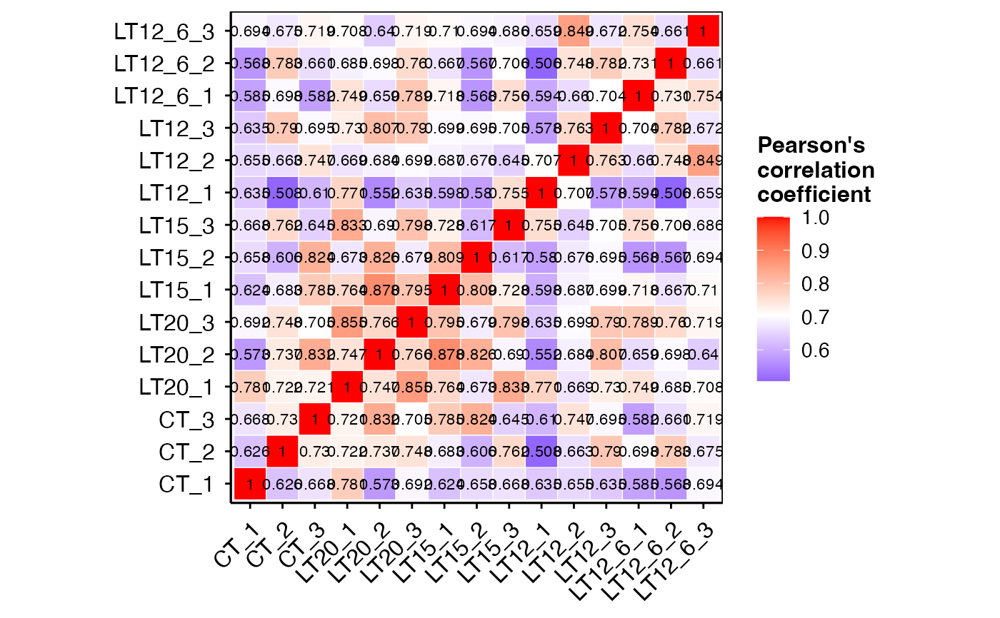
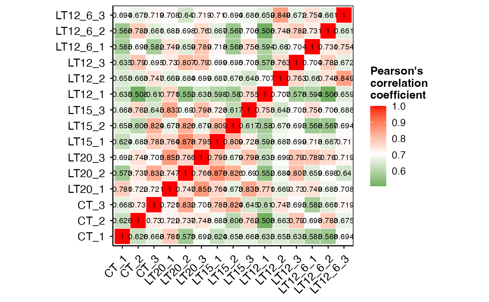
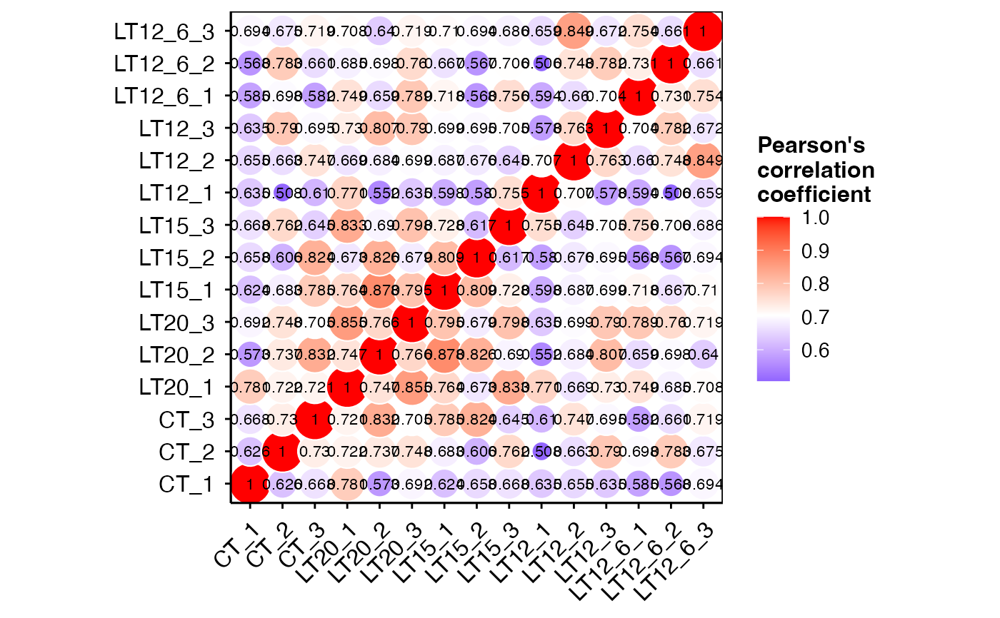

Correlation Heatmap for samples/groups based on Pearson algorithm.
Source:R/corr_heatmap.R
corr_heatmap.RdCorrelation Heatmap for samples/groups based on Pearson algorithm.
Usage
corr_heatmap(
data,
corr_method = "pearson",
cell_shape = "square",
fill_type = "full",
lable_size = 3,
axis_angle = 45,
axis_size = 12,
lable_digits = 3,
color_low = "blue",
color_mid = "white",
color_high = "red",
outline_color = "white",
ggTheme = "theme_publication"
)Arguments
- data
Dataframe: All genes in all samples expression dataframe of RNA-Seq (1st-col: Genes, 2nd-col~: Samples).
- corr_method
Character: correlation method. Default: "pearson", options: "pearson", "spearman", "kendall".
- cell_shape
Character: heatmap cell shape. Default: "square", options: "circle", "square".
- fill_type
Character: heatmap fill type. Default: "full", options: "upper", "low", "full".
- lable_size
Numeric: heatmap label size. Default: 3, min: 0.
- axis_angle
Numeric: axis rotate angle. Default: 45, min: 0, max: 360.
- axis_size
Numberic: axis font size. Default: 12, min: 0.
- lable_digits
Numeric: heatmap label digits. Default: 3, min: 0, max: 3.
- color_low
Character: low value color name or hex value. Default: "blue".
- color_mid
Character: middle value color name or hex value. Default: "white".
- color_high
Character: high value color name or hex value. Default: "red".
- outline_color
Character: outline color name or hex value. Default: "white".
- ggTheme
Character: ggplot2 theme. Default: "theme_publication", options: "theme_default", "theme_bw", "theme_gray", "theme_light", "theme_linedraw", "theme_dark", "theme_minimal", "theme_classic", "theme_void".
Examples
# 1. Library TOmicsVis package
library(TOmicsVis)
# 2. Use example dataset gene_exp
data(gene_expression)
head(gene_expression)
#> Genes CT_1 CT_2 CT_3 LT20_1 LT20_2 LT20_3 LT15_1 LT15_2
#> 1 transcript_0 655.78 631.08 669.89 654.21 402.56 447.09 510.08 442.22
#> 2 transcript_1 92.72 112.26 150.30 88.35 76.35 94.55 120.24 80.89
#> 3 transcript_10 21.74 31.11 22.58 15.09 13.67 13.24 12.48 7.53
#> 4 transcript_100 0.00 0.00 0.00 0.00 0.00 0.00 0.00 0.00
#> 5 transcript_1000 0.00 14.15 36.01 0.00 0.00 193.59 208.45 0.00
#> 6 transcript_10000 89.18 158.04 86.28 82.97 117.78 102.24 129.61 112.73
#> LT15_3 LT12_1 LT12_2 LT12_3 LT12_6_1 LT12_6_2 LT12_6_3
#> 1 399.82 483.30 437.89 444.06 405.43 416.63 464.75
#> 2 73.94 96.25 82.62 85.48 65.12 61.94 73.44
#> 3 13.35 11.16 11.36 6.96 7.82 4.01 10.02
#> 4 0.00 0.00 0.00 0.00 0.00 0.00 0.00
#> 5 232.40 148.58 0.00 181.61 0.02 12.18 0.00
#> 6 85.70 80.89 124.11 115.25 113.87 107.69 119.83
# 3. Default parameters
corr_heatmap(gene_expression)
#> Warning: `aes_string()` was deprecated in ggplot2 3.0.0.
#> ℹ Please use tidy evaluation idioms with `aes()`.
#> ℹ See also `vignette("ggplot2-in-packages")` for more information.
#> ℹ The deprecated feature was likely used in the ggcorrplot package.
#> Please report the issue at <https://github.com/kassambara/ggcorrplot/issues>.
#> Scale for fill is already present.
#> Adding another scale for fill, which will replace the existing scale.

# 4. Set color_low = "#008800"
corr_heatmap(gene_expression, color_low = "#008800")
#> Scale for fill is already present.
#> Adding another scale for fill, which will replace the existing scale.

# 5. Set cell_shape = "circle"
corr_heatmap(gene_expression, cell_shape = "circle")
#> Scale for fill is already present.
#> Adding another scale for fill, which will replace the existing scale.
